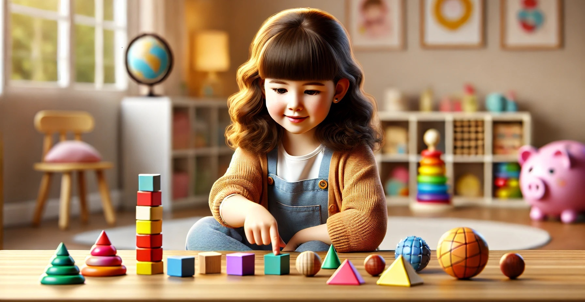

What Should a 1st Grader Child Know by the End of the Year?

Grade 1
Grade 1 is an exciting and transformative year for children. It marks the beginning of formal education, where students move beyond the basics learned in kindergarten and start building foundational skills that will support their future learning. By the end of the school year, a first grader is expected to have made significant progress in reading, writing, math, and social development.
Here’s a detailed look at what your child should know by the end of Grade 1.
Academic Skills - Reading
By the end of first grade, most students can:
⁕ Read simple books independently.
⁕ Recognize and read high-frequency (sight) words.
⁕ Use phonics to decode unfamiliar words.
⁕ Understand the main idea and key details in a story.
⁕ Retell stories with beginning, middle, and end.
⁕ Make simple inferences and predictions.
⁕ Read with fluency and expression appropriate for age.
Academic Skills - Writing
Writing skills typically include:
⁕ Writing complete sentences with proper punctuation and capitalization.
⁕ Spelling common words correctly and using phonetic spelling for unknown words.
⁕ Writing brief stories, opinion pieces, or informative texts with a clear focus.
⁕ Using transition words like first, next, then, and last.
⁕ Beginning to revise and edit their writing with guidance.
Academic Skills - Math
In math, first graders are expected to:
⁕ Count, read, and write numbers up to 120.
⁕ Understand place value (ones and tens).
⁕ Add and subtract within 20 using strategies like counting on, doubles, or making ten.
⁕ Solve simple word problems using addition and subtraction.
⁕ Understand and use basic measurement (length, weight, time).
⁕ Recognize and draw 2D and 3D shapes.
⁕ Use simple graphs and charts to organize information.
Science and Social Studies
Science - Students often explore:
⁕ The five senses and how they work.
⁕ Basic needs of plants and animals.
⁕ Weather and seasonal changes.
⁕ Simple experiments and observations.
⁕ Introduction to the scientific method (ask, observe, predict, and conclude).
Social Studies - Key concepts:
⁕ Understanding rules and why we have them.
⁕ Learning about community helpers and local government.
⁕ Identifying national symbols and holidays.
⁕ Understanding basic geography (maps, landforms, directions).
⁕ Developing awareness of cultures and traditions.
Social and Emotional Development
Social and emotional learning is just as important as academics. By the end of Grade 1, students should be able to:
⁕ Follow classroom routines and directions.
⁕ Work independently and in groups.
⁕ Show respect for others and their ideas.
⁕ Express feelings in appropriate ways.
⁕ Demonstrate responsibility and self-control.
⁕ Solve simple conflicts with words.
Technology Skills
With digital tools becoming more integrated into classrooms, first graders often learn to:
⁕ Use a mouse and keyboard with basic proficiency.
⁕ Open and close programs or apps.
⁕ Type simple words or sentences.
⁕ Use educational games or apps to reinforce skills.
⁕ Practice basic internet safety (with adult supervision).
Fine Motor and Artistic Skills
Children in Grade 1 continue to develop coordination and creativity:
⁕ Use scissors, glue, and pencils with control.
⁕ Draw recognizable shapes and figures.
⁕ Participate in music, dance, and drama activities.
⁕ Explore different materials and tools in art.
How Parents Can Help
To support your first grader:
⁕ Read with your child every day and talk about the story.
⁕ Practice simple math in everyday situations (cooking, shopping).
⁕ Encourage writing through journals, letters, or cards.
⁕ Maintain routines that build responsibility and independence.
⁕ Communicate regularly with teachers about progress and needs.
Final Thoughts
Grade 1 is a building block for future learning. Every child grows at their own pace, and some may be ahead in certain areas while needing support in others. The goal is steady progress, a love of learning, and a strong foundation. With the right support at home and school, your child will finish the year confident and ready for Grade 2!